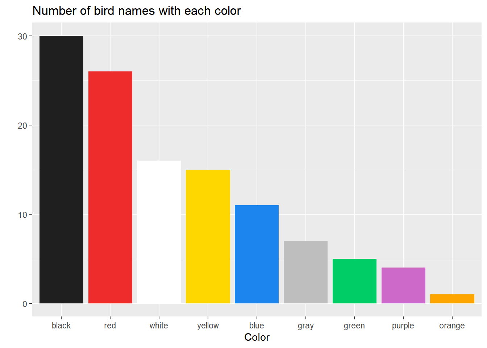
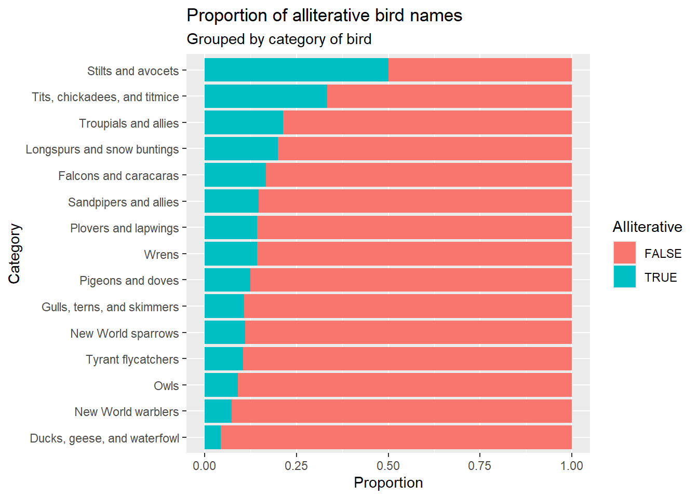
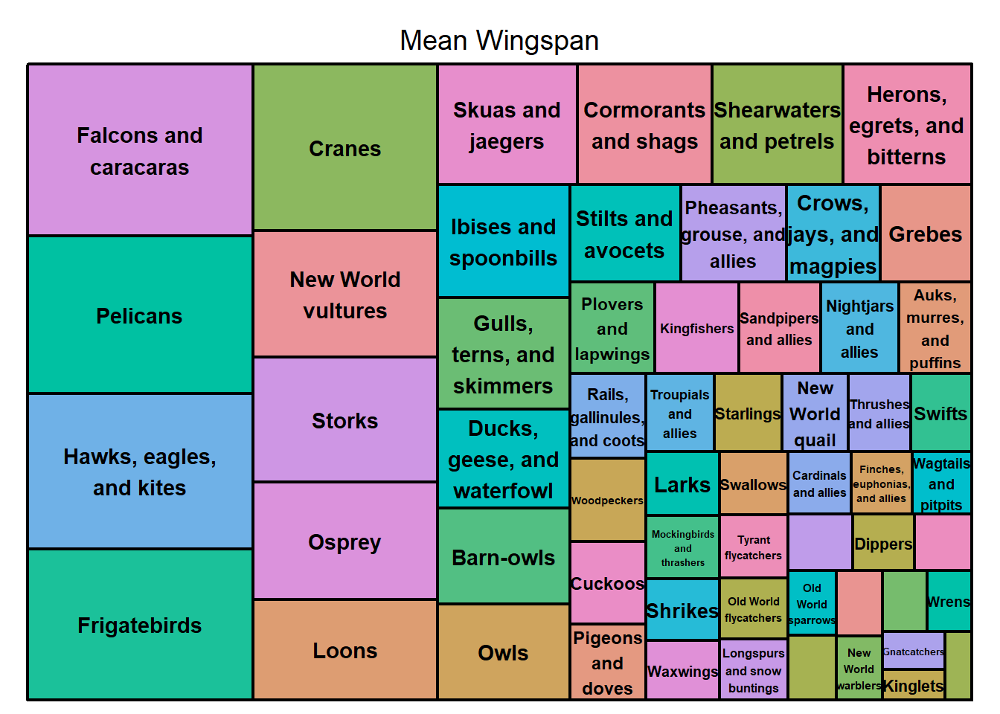
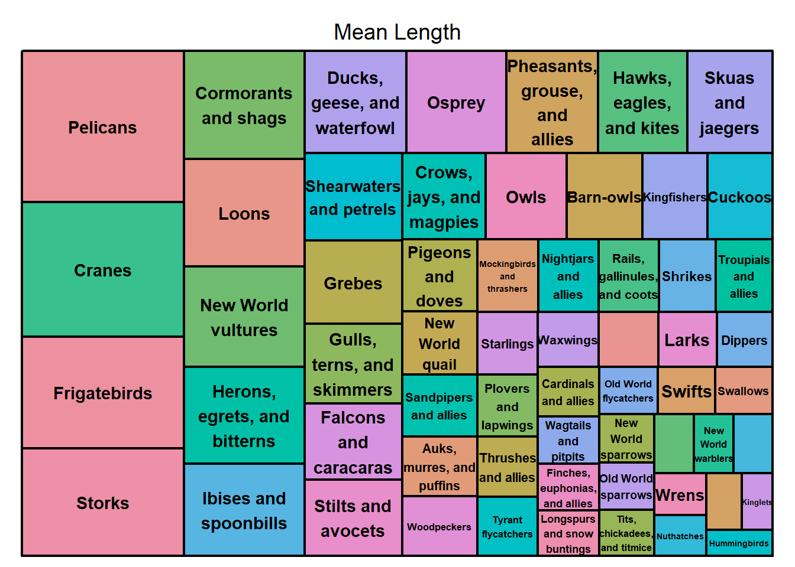
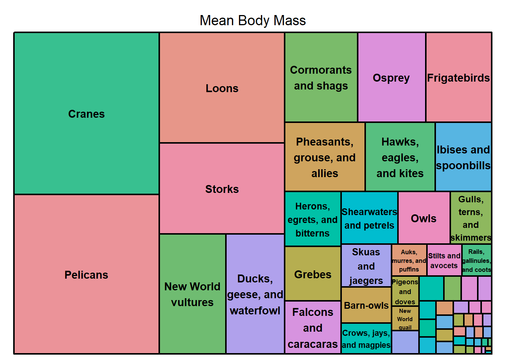
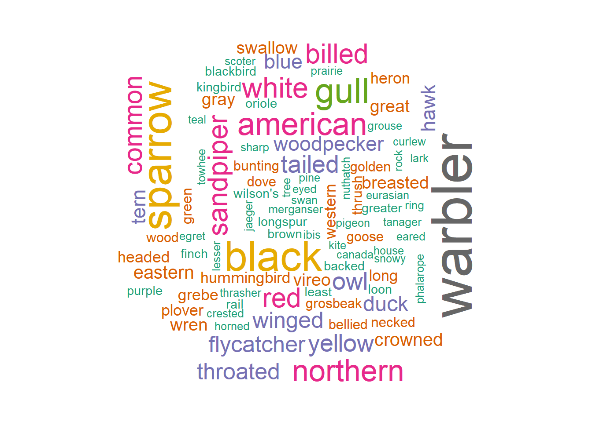

Mini-Project 3
April 17, 2024
Minnesota Birds
Source: kaggle.com - Minnesota Birds
Introduction
This unit has a broad reach, because strings and characters are everywhere! Our task to find a data set to analyze with strings was almost too easy because the options are endless. I found a data set I liked that had a list of all birds that have been found in Minnesota. Using string functions and regular expressions, I ran a variety of tests to find patterns in bird names, such as colors, possessive apostrophes, and alliterations.
Colors
For the first analysis of these birds, I looked at which colors birds are named for most often. I chose to only extract basic colors of the rainbow, plus black, gray, and white. From the graph, we can see that birds in Minnesota are mostly named for the color black, then red and white.
Names
A hot topic in the birding community is whether a large chunk of birds should be renamed. What’s causing this need for change? Racism, mostly. And sexism. The American Ornithological Society made the decision to rename all birds whose names are eponyms, or named directly for a person. Many birds are named after historical figures, often whoever discovered them. More often than not, these people were hurtful and the legacies they carry on through the names of birds can create an environment minority birders don’t feel they are welcome in.
This article by NPR highlights the way some of these bird’s names have been exclusionary in the past, and how some are responding to this change. In an interview with Kenn Kaufman, a longtime author of bird guides, he tells of how he came around to the change.
Another compelling reason for this change is to showcase a unique characteristic of the bird. For example, ‘Townsend’s Warbler’ doesn’t bring a vivid picture to one’s mind, but ‘Black-Throated Gray Warbler’ does, or ‘Hermit Warbler’ indicates something about the bird’s behavior.
This following table provides a look at the names of birds that will be changing in the near future! If you see birds you know and love, what do you think they should be named? The American Ornithological Society has committed to including the public in deciding new names, so your input could be taken into account!
| Name |
|---|
| Ross's goose |
| Barrow's goldeneye |
| Clark's grebe |
| Chuck-will's-widow |
| Rivoli's hummingbird |
| Anna's hummingbird |
| Costa's hummingbird |
| Wilson's plover |
| Baird's sandpiper |
| Wilson's snipe |
| Wilson's phalarope |
| Sabine's gull |
| Bonaparte's gull |
| Ross's gull |
| Franklin's gull |
| Forster's tern |
| Cooper's hawk |
| Swainson's hawk |
| Lewis's woodpecker |
| Williamson's sapsucker |
| Cassin's kingbird |
| Say's phoebe |
| Bell's vireo |
| Clark's nutcracker |
| Bewick's wren |
| Townsend's solitaire |
| Swainson's thrush |
| Sprague's pipit |
| Cassin's finch |
| Smith's longspur |
| Brewer's sparrow |
| Harris's sparrow |
| LeConte's sparrow |
| Nelson's sparrow |
| Baird's sparrow |
| Henslow's sparrow |
| Lincoln's sparrow |
| Bullock's oriole |
| Scott's oriole |
| Brewer's blackbird |
| MacGillivray's warbler |
| Kirtland's warbler |
| Townsend's warbler |
| Wilson's warbler |
Alliterations
As a fun little analysis of this data set, I decided to look for alliterations in these bird’s names! Some of them are quite silly to say out loud.
| Name | Category |
|---|---|
| Greater White-Fronted Goose | Ducks, geese, and waterfowl |
| Surf Scoter | Ducks, geese, and waterfowl |
| Passenger Pigeon | Pigeons and doves |
| American Avocet | Stilts and avocets |
| Piping Plover | Plovers and lapwings |
| Sharp-Tailed Sandpiper | Sandpipers and allies |
| Stilt Sandpiper | Sandpipers and allies |
| Semipalmated Sandpiper | Sandpipers and allies |
| Spotted Sandpiper | Sandpipers and allies |
| Solitary Sandpiper | Sandpipers and allies |
| Glaucous-Winged Gull | Gulls, terns, and skimmers |
| Glaucous Gull | Gulls, terns, and skimmers |
| Great Black-Backed Gull | Gulls, terns, and skimmers |
| Great Gray Owl | Owls |
| Crested Caracara | Falcons and caracaras |
| Fork-Tailed Flycatcher | Tyrant flycatchers |
| Western Wood-Pewee | Tyrant flycatchers |
| Tufted Titmouse | Tits, chickadees, and titmice |
| Winter Wren | Wrens |
| Lapland Longspur | Longspurs and snow buntings |
| Savannah Sparrow | New World sparrows |
| Song Sparrow | New World sparrows |
| Swamp Sparrow | New World sparrows |
| Orchard Oriole | Troupials and allies |
| Brewer's Blackbird | Troupials and allies |
| Great-Tailed Grackle | Troupials and allies |
| Worm-Eating Warbler | New World warblers |
| Black-Throated Blue Warbler | New World warblers |
| Wilson's Warbler | New World warblers |
Some of these bird categories have more than one alliteration and seem like they could be a significant proportion of their category - especially sandpipers! I decided to see if these groupings of birds had high proportions of alliterative names.

As it turns out, the highest proportion of alliterative names in these groups is for the stilts and avocets - of which there are only two.
Largest Birds
Although this section doesn’t use string functions to carry out analysis, we learned about tree maps in class, and I wanted to use an application of this visualization in my project.
These following tree maps show the largest groups of birds on average by their wingspan, length, and body mass. Larger squares correspond with larger wingpans, lengths or body masses.



Wordcloud
For a final visualization, I made a wordcloud of the common words in bird’s names. The larger words are ones that appear most frequently. I chose to make this visualization with the 120 most often occurring words. Some of the most common words, such as ‘warbler’ or ‘sparrow’, occur frequently because there are many types included in the data set.
